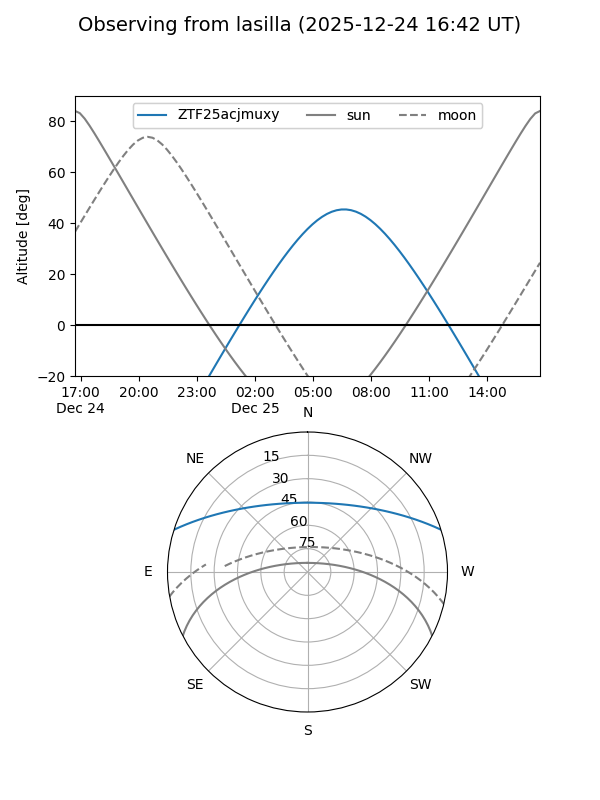
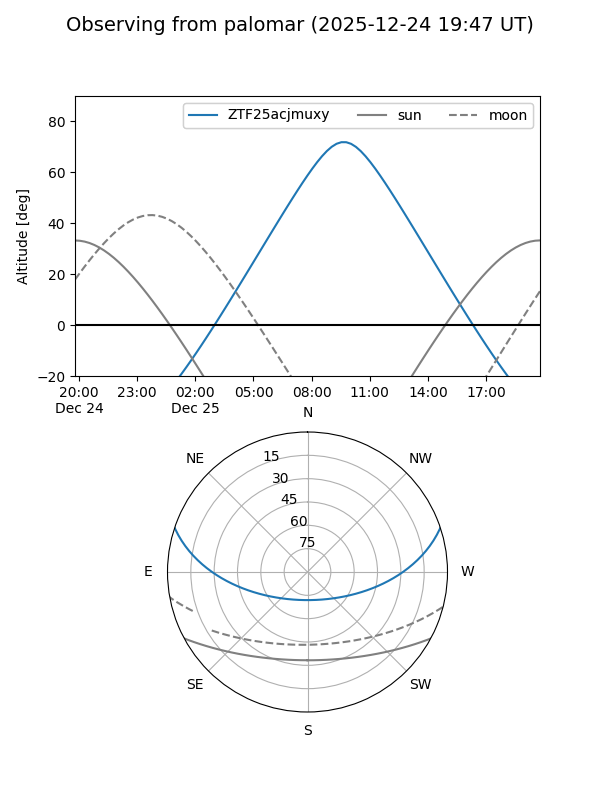
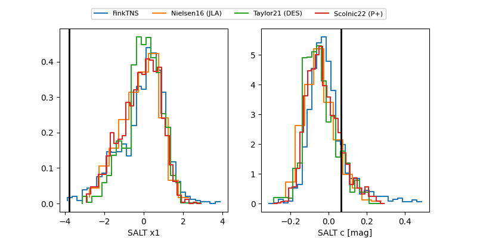

ZTF25acjmuxy
Target ZTF25acjmuxy at 2025-12-22 18:06
Aliases and brokers:
FINK: fink-portal.org/ZTF25acjmuxy
Lasair: lasair-ztf.lsst.ac.uk/objects/ZTF25acjmuxy
ALeRCE: alerce.online/object/ZTF25acjmuxy
alt names
ZTF25acjmuxy (ztf,fink_ztf)
Coordinates:
equatorial (ra, dec) = 121.8278,+15.36121
equatorial (HMS+DMS) = 08:07:18.67,+15:21:40.35
galactic (l, b) = (207.1188,+23.56211)
Flags:
Photometry:
last ztfg=20.02, ztfr=20.40
1 ztfg, 1 ztfr detections
Lightcurve

Visibility


Additional plots
